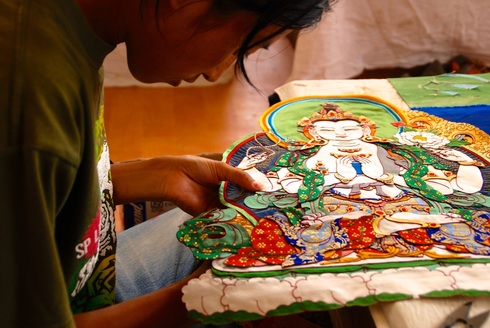
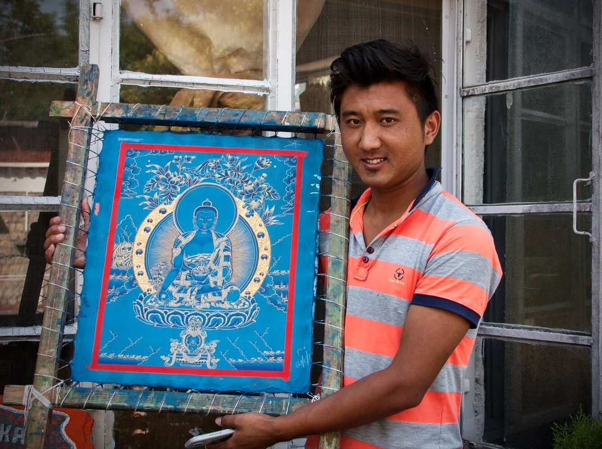

Looking back in history, it has always been during times of peace and prosperity that the arts have flourished and reached their highest pinnacle of refinement. Royalty and wealthy sponsors would patronize artists and craftsmen in a quest to display the finest work their culture had to offer, thus driving the standards of excellence higher and higher.
In turbulent times, times of strife or struggle, naturally there is no space in the minds of people to consider the patronage of higher culture, and support for the arts declines and is replaced by the concerns of daily life. With no elaborate commissions in which to show off their artistic talent, and no demand for the training of future artists, naturally the splendor of the arts declines as well, and so too the knowledge of how to create such beauty fades.
At Norbulingka it is our aim to retain the artistic knowledge and techniques which were achieved at the pinnacle of Tibetan Buddhist civilization, and to pass these on to new generations of artists who are interested in pursing their cultural heritage. We do this through a sustainable business model whereby we act as our own patrons, allowing us to provide jobs and training to Tibetans in exile.

As well as producing museum-quality art, we also run a variety of hospitality operations including three guesthouses and two restaurants. These ventures take pressure off of our artists to produce in mass quantity, who can then focus on maintaining the authenticity of their artistic lineages. It also allows us to provide additional jobs with stable income and training in service and administration to many in the Tibetan community. All income generated by Norbulingka then goes back into the institute, through which we can support social programs such as health and child care for our staff, as well as apprenticeships in traditional arts, and the patronage of various scholastic projects.
In this way Norbulingka acts as a self-sustaining community, where all members contribute to the larger vision of preserving Tibetan culture, and where the income generated is re-invested to create a better life for our staff and future Tibetan generations.
By purchasing our products and enjoying our hospitality services, you are not only promoting the preservation of rare art forms of the highest caliber, but you are supporting the lives of artists, staff members and their families, and by extension the community in which they live, which acts as a cradle for Tibetan values in exile.
